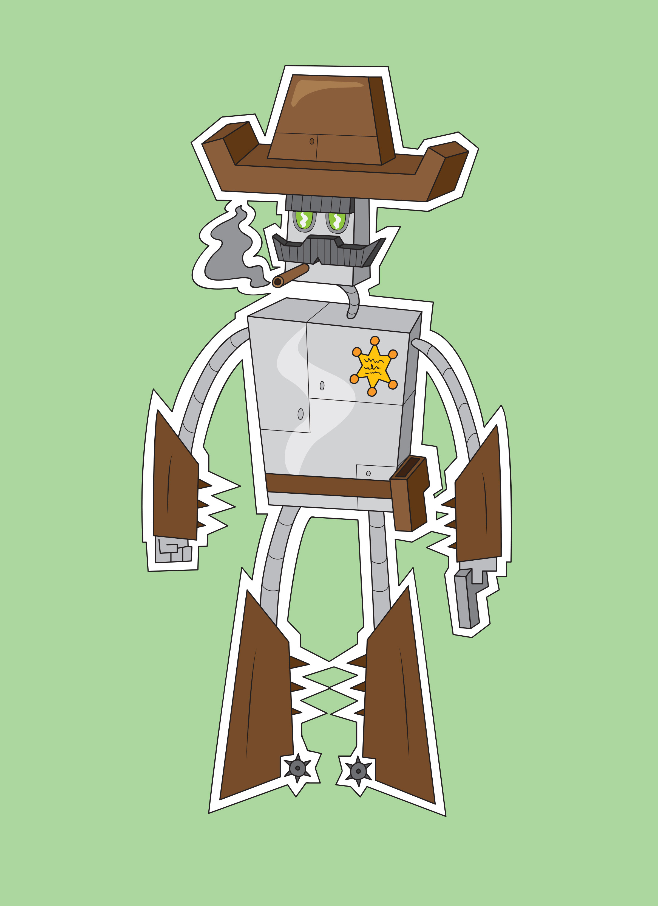

Rootin' Tootin' Cowbot 9000

Pretty much everyone knows what a robot is, and they are generally perceived as being cold and non-human.
So for this project, I wanted to experiment with giving a robot some character and distinction.
I was inspired by the old cartoons of the early 2000s which featured lots of Wild West-themed material.
I really wanted my robot to look like it was pulled from one of those cartoons while also having a personality of its own.
In terms of aesthetics, I also wanted the robot to maintain that cartoonish visual style as well. It uses lots of simple shapes like rectangles and circles, and a strong silhouette. I also experimented with giving it a white outline to mimic the aesthetic of a character sticker.